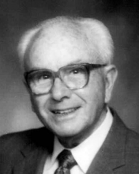

Please note: the AAS Obituaries are temporarily being hosted on this website while their full content is being ingested into the PubPub publishing platform newly adopted by the Bulletin of the American Astronomical Society. When the migration is complete, your existing links will take you to the final, migrated content. Contact peter.williams@aas.org with any questions.
Timothy P. McCullough Jr. (1910-2004)
Timothy Pendleton McCullough Jr., 93, a retired research physicist who was a pioneer in the measurement of microwave radiation from planetary surfaces, died of cardiac arrest on 19 November 2004, at Inova Fairfax Hospital. He lived in Springfield, VA.
McCullough, who was principally a radio astronomer, published 22 scientific research papers while working in the Atmosphere and Astrophysics Division of NRL, from 1946 until his retirement in 1975.
He spent the early part of his career in planetary observation and was among the first in his field to use radio astronomy to measure the surface temperature of Venus. He also studied Mars and Jupiter. Later, his interest turned to supernovas, galaxies and solar flares.
He was an emeritus member of the American Astronomical Society and a member of the Sigma Xi Scientific Research Society.
McCullough was born on 9 December 1910 in Vardaman, Mississippi. His father, Timothy P. McCullough, was a farmer and bookkeeper. His mother, Annie W. McCullough, was a homemaker. Timothy McCullough, Jr.'s parents, as well as two sisters and a brother, are deceased.
McCullough graduated from the University of Mississippi in Oxford in 1936 and received a master's degree in physics from North Carolina State University in Raleigh. He taught physics and aviation navigation before entering the Navy during World War II. He instructed Russian sailors on anti-submarine warfare. McCullough left the Navy at the end of the war, but continued to serve in the Naval Reserve.
He was recalled to active duty during the Korean War and was stationed at Potomac River Naval Command, where he wrote technical documents on electronic warfare systems.
McCullough retired from the Naval Reserve in 1969 with the rank of commander. He was a charter member of First Baptist Church in Springfield and a former deacon and Sunday school teacher at First Baptist Church in Alexandria.
Survivors include his wife of 63 years, Virginia Ball McCullough of Springfield; three children, Robert E. "Gene" McCullough of Denver, Jane Ball Phillips of St. Matthews, S.C., and Charles E. McCullough of Clifton; seven grandchildren and four great-grandchildren.
[The preceding article expands upon one published in the NRL Labstracts of 18 April 2005 and is used with permission.]
Obituary written by: Charles McCullough (Naval Research Laboratory)
BAAS Citation: BAAS, 2007, 39, 1073
SAO/NASA ADS Bibcode: 2007BAAS...39.1073M